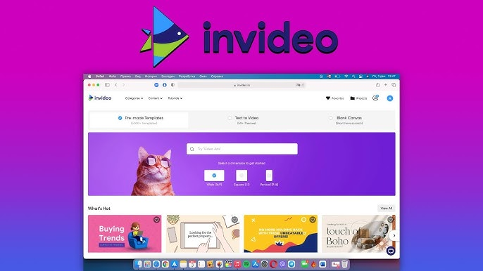
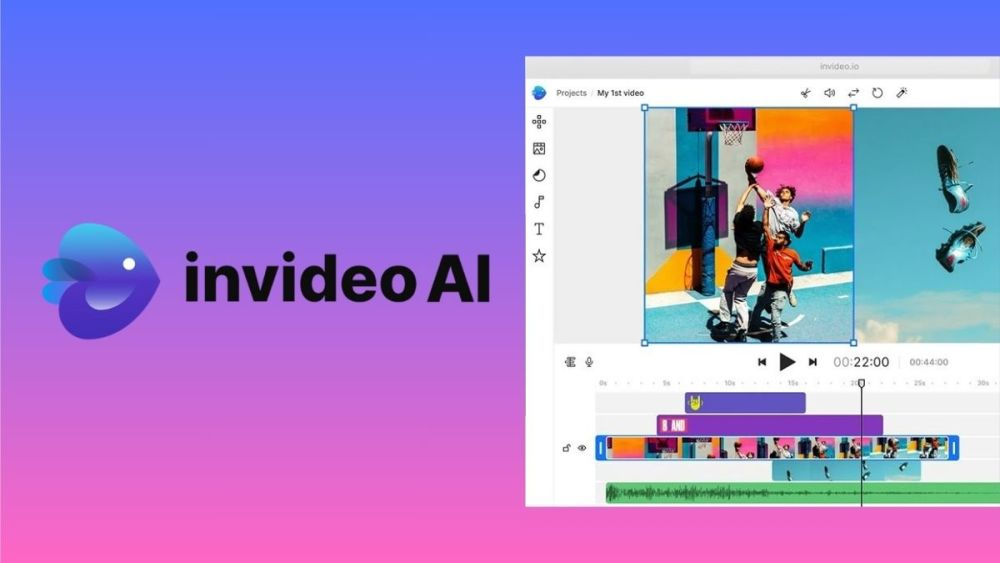

InVideo

1. Đặc Điểm Nổi Bật
InVideo AI là công cụ chỉnh sửa và tạo video tiên tiến được hỗ trợ bởi trí tuệ nhân tạo. Ứng dụng giúp người dùng dễ dàng tạo ra các video ấn tượng với các tính năng như chuyển đổi kịch bản thành video, mẫu thiết kế tùy chỉnh, và công cụ chỉnh sửa nâng cao.
- Tạo Video Tự Động: Chuyển đổi văn bản hoặc kịch bản thành video một cách dễ dàng.
- Thư Viện Mẫu Đa Dạng: Truy cập nhiều mẫu video tùy chỉnh cho nhiều mục đích khác nhau.
- Chỉnh Sửa AI: Nâng cao video với các hiệu ứng, chuyển cảnh, và âm thanh do AI đề xuất.

2. Ưu Điểm
- Dễ Sử Dụng: Không yêu cầu kinh nghiệm chỉnh sửa video trước đây.
- Tiết Kiệm Thời Gian: Tạo video chất lượng chuyên nghiệp chỉ trong vài phút.
- Tùy Chỉnh Linh Hoạt: Điều chỉnh các yếu tố như văn bản, hình ảnh, và âm thanh theo nhu cầu.
- Chi Phí Hợp Lý: Các gói giá phù hợp cho cá nhân và doanh nghiệp.
3. Nhược Điểm
- Giới Hạn Phiên Bản Miễn Phí: Hạn chế quyền truy cập vào các mẫu cao cấp và tính năng nâng cao.
- Không Có Hiệu Ứng Nâng Cao: Thiếu các tính năng cho hiệu ứng video phức tạp như hoạt hình 3D.
- Khả Năng Trùng Lặp: Các mẫu có thể dẫn đến sự giống nhau giữa các video của người dùng khác nhau.
4. Gói Sử Dụng
| Gói |
Tính Năng |
Giá |
| Miễn Phí |
Mẫu cơ bản, video có watermark |
0 VNĐ |
| Pro |
Truy cập mẫu cao cấp, video không watermark |
350.000 VNĐ/tháng |
| Doanh Nghiệp |
Tùy chỉnh nâng cao, hỗ trợ nhóm |
700.000 VNĐ/tháng |
5. Dùng Thử Ngay
6. Video hướng dẫn sử dụng